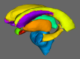

FIRST v1.1
FMRIB's Integrated Registration and Segmentation Toolsubcortical brain segmentation using Bayesian shape & appearance models
|  | FIRST v1.1FMRIB's Integrated Registration and Segmentation Toolsubcortical brain segmentation using Bayesian shape & appearance models |
FIRST is a model-based segmentation/registration tool. The shape/appearance models used in FIRST are constructed from manually segmented images provided by the Center for Morphometric Analysis (CMA), MGH, Boston. The manual labels are parameterized as surface meshes and modelled as a point distribution model. Deformable surfaces are used to automatically parameterize the volumetric labels in terms of meshes; the deformable surfaces are constrained to preserve vertex correspondence across the training data. Furthermore, normalized intensities along the surface normals are sampled and modelled. The shape and appearance model is based on multivariate Gaussian assumptions. Shape is then expressed as a mean with modes of variation (principal components). Based on our learned models, FIRST searches through linear combinations of shape modes of variation for the most probable shape instance given the observed intensities in your T1 image.
For more information on FIRST, see the D.Phil. thesis or the FMRIB technical report. The thesis provides a more thorough and complete description.
We are very grateful for the training data for FIRST, particularly to David Kennedy at the CMA, and also to: Christian Haselgrove, Centre for Morphometric Analysis, Harvard; Bruce Fischl, Martinos Center for Biomedical Imaging, MGH; Janis Breeze and Jean Frazier, Child and Adolescent Neuropsychiatric Research Program, Cambridge Health Alliance; Larry Seidman and Jill Goldstein, Department of Psychiatry of Harvard Medical School; Barry Kosofsky, Weill Cornell Medical Center.
FIRST segmentation requires firstly that you run first_flirt to find the affine transformation to standard space, and secondly that you run run_first to segment a single structure (re-running it for each further structure that you require). Alternatively, you can use run_first_all, which does all of the above for you, including running run_first on every subcortical structure in the models, and producing a summary segmentation image for all structures. **Please note, if the first stage fails then the models fitting will not work. run_first_all continues to run regardless of gross errors in registration.
first_flirt should be used on whole-head (non-betted) images. Although this option is generally discouraged the flag -b will allow first_flirt to be used on brain extracted data.
Example usage:
first_flirt im1 im1_to_std_sub
This command will generate the registered (im1_to_std_sub) as well as the transformation matrix (im1_to_std_sub.mat).
Additional options:
The [ -d ] option prevents the deletion of the images and transformation matrices produced in the intermediary registration steps. This is used for debugging purposes.
The [ -b ] option uses the brain extracted MNI template rather than the whole head template.
The [ -inweight ] specifies a mask to weight the input image in the first stage of the registration.
The [ -cort ] option will indicate to first_flirt to perform the alternate "second stage" in addition to the standard procedure ("_cort" will be appended to the output name). Rather than using a subcortical mask, a brain mask is used. This option should be used if intending to run the cerebellum models.
You should verify that the registrations were successful prior to further processing (e.g. using ${FSLDIR}/bin/slicesdir -p ${FSLDIR}/data/standard/MNI152_T1_1mm.nii.gz im*_to_std_sub.nii.gz). When assessing the registration, pay attention to the sub-cortical structures. Note that the cortex may not always align well, particularly where there are large ventricles.
Example usage:
run_first -i im1 -t im1_to_std_sub.mat -n 40 -o output -m ${FSLDIR}/data/first/models_336_bin/L_Hipp_bin.bmv
or
run_first -i im1 -t im1_to_std_sub.mat -n 40 -o output -m ${FSLDIR}/data/first/models_336_bin/L_Hipp_bin.bmv -loadvars seg_first.bvars -shcond st1_given_st2.bmap -intref modelRef.bmv
Main options:
-i : the T1-weighted image (im1) to be segmented.
-t : the matrix (im1_to_std_sub.mat) that describes the transformation of im1 into standard space (found by first_flirt).
-n : the number of modes of variation to be used in the fitting. The more modes of variation used the finer details FIRST may capture, however you may decrease the robustness/reliability of the results. The more modes that are included the longer FIRST will take to run. The current suggested number of modes is for each structure is given in sub-cortical labels. The suggested number of modes is based on leave-one-out cross-validation run on the training set. The maximum number of modes available is either 317 or 336, depending on the model.
-o : the (output_name) from FIRST. Three files are output output_name.vtk, output_name.nii.gz and output_name.bvars.
-m : precedes the model file (e.g. L_Hipp_bin.bmv) ; they are located in ${FSLDIR}/data/first/models_336_bin/. You will need to use the full path to the model.
Optional options:
-loadBvars : Initializes FIRST with a previous estimate of the structure. If used with "-shcond" it initializes the structure to be conditioned on.
-shcond : This option will run FIRST on a structure given a previously segmented structure. "-shcond" precedes the mapping file that maps the mode parameters into the conditional mode parameters. The [ -loadBvars ] must be used to indicate the segmentation result of the previous structure. The mapping matrices are found in ${FSLDIR}/data/first/models_317_bin/condMaps/ (only for use with the 317 models). The direction of the conditional is important, for example, L_CaudCondThal.bmap is used for the left caudate conditioned on the left thalamus, i.e. the thalamus is segmented first then the caudate.
-intref : This option indicates to FIRST to use a reference structure for the local intensity normalization. "intref" precedes the model files that will be used for reference. The model file used ("-m" option) must correspond to the intensity model corresponding to the particular reference structure. We currently only provide model files for the Caudate, Hippocampus, Lateral Ventricles and Amygdala; they are located in ${FSLDIR}/data/first/models_336_bin/intref/, except the Lateral Ventricles which are located in ${FSLDIR}/data/first/models_317_bin/intref/. They all use the thalamus as reference. The cerebellum is now included in ${FSLDIR}/data/first/models_336_bin/05mm/, it used the putamen as a reference.
-multipleImages: This options allows first to run on multiple image by inputting a list of images, transformation matrices and output basenames. For a single structure, FIRST will be run on each image independently. There should be some computational savings due to the fact that the model does not need to be re-read from file for each image; the option is primarily included for convenience. When using this option, you should not include the transformation matrix with the -t option. The output name specified by the -o option will be appended onto the output name specified in the input list. The input list is a plain, 3 column text file. The first column specifies the images (advisable to include full paths), the second column is the transformation matrices output by first_flirt, the third column is the base output name.
Example usage:
run_first -i image_xfm_output_list.txt -n 40 -o L_Thal_n40 \
-m ${FSLDIR}/data/first/models_336_bin/05mm/L_Thal_05mm.bmv
where image_xfm_output_list.txt may look like,
subject_1_t1 subject_1_t1_to_mni.mat subject_1
subject_2_t1 subject_2_t1_to_mni.mat subject_2
subject_3_t1 subject_3_t1_to_mni.mat subject_3
By using the above command, FIRST would fit L_Thal_05mm.bmv to subject_1, subject_2, and subject_3. The output would
be a nifti image, .bvars and .vtk output files, with the base names subject_1_L_Thal_n40, subject_2_L_Thal_n40, and
subject_3_L_Thal_n40 respectively.
Example usage:
run_first_all im1 3 output_name
The first input is the original T1-weighted structural image.
The second input (3) is the z-value used to threshold the boundary voxels. In this release, this is not used for the thalamus, putamen, and pallidum.
The third input (output_name) is the output basename. run_first_all will append the number of modes of variation and threshold used to the file name. For example, the command above would produce output_name_m60_3_first.nii.gz.
Please be aware that there is no explicit guarantee that neighbouring structures will not overlap. In the case where there is overlap the script will add the labels together. Also, even though voxels may overlap, it does not necessarily mean that the surfaces intersect.
Usage:
first_utils --singleBoundaryCorr -i output_name -r im1 -p 3 -o output_name_corr
For the models contained in ${FSLDIR}/data/first/models_336_bin/05mm/, all boundary voxels are considered as belonging to the structure. fslmaths can be used to combine the boundary and interior voxels (e.g. fslmaths subject_1_L_Thal -bin -mul 10 subject_1_L_Thal_bcorr).